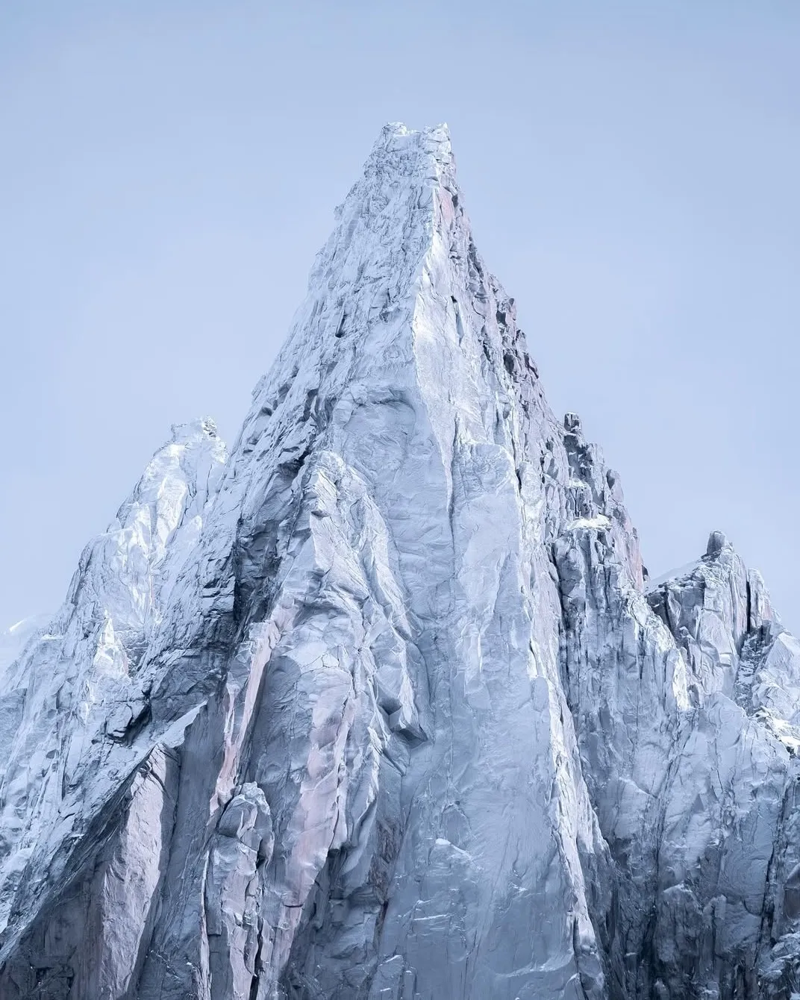

Photo · @robingaillotdrevonTHE SPIRES IN WINTER
Same twin spires, dressed in ice and snow. The contrast against dark granite is what makes the winter shot sing.
Same access as summer version. Montenvers train, then snowshoes along the ridge vantages above the glacier. Stop and recompose every few minutes as the angles shift.
Clear conditions help the rock/snow contrast read; heavy cloud softens it too much. A long lens (200mm+) compresses the scene the way you want it.